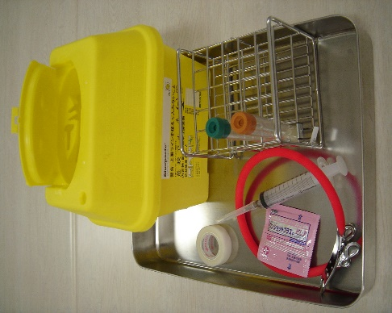

Ⅲ. 体液曝露対策 1. 防止対策
体液曝露防止のための基本対策
- Ｂ型肝炎ワクチンの接種
- 安全装置付き器材の使用
- 針捨てボックスの常備
- 手袋の着用
- 体液曝露対策の心構え
・針を使用する処置は、焦らずゆったりとした気持ちで望む
・針を使用している時は、その処置に集中する
・処置になれていても、手順を省略せず、常に基本に戻ることを心がける
・スタッフ間で定期的にシミュレーションを行い、手順の統一を図る
・体液曝露を防止するためにも、健康管理をしっかり行う
- 環境を整える
・作業に適した明るさを確保する
・安全な手技で行えるよう作業スペースを確保する
・作業しやすいようにベッドの高さを調節する
・必要物品の準備（安全装置付き器材、携帯用廃棄容器、手袋など）
・手袋はしっかりとフィットするものを選ぶ
・すぐに捨てられるように、処置前にシャープセーフを手の届くところに準備する
・シューズはサンダルではなく、足を覆うシューズ型のものを選択する
・針を扱う処置や検査をしている医師・看護師には近づかない（近づく時には、必ず声をかける）
必要物品の準備（採血時）

携帯用廃棄容
- 患者への説明
・採血・注射の際は、処置が終了したことを告げるまで動かないよう、前もって説明しておき、協力を得る
・痛みがあった場合は動かず、口で伝えるよう説明する
・協力を得られない患者の場合は、共同作業者の応援を求める
・また応援が求められない場合は、抑制が必要となる場合もある
- 処置時のポイント
・針を持ったままの状態で他の動作を行わない
・使用後の注射器は放置せず、使用者（術者）がすぐに廃棄する
・処置が終了するまでは、集中して行う
・介助者は、術者から一定の距離を置き、安全に処置が行われるよう配慮する（処置を行っている人の側には近寄らない）
・穿刺時、針先の延長線上に自分の手がないようにする
- 持続点滴留置時のポイント
・基本的に、末梢の血管確保は術者一人で行う
・固定用の絆創膏は、術者の手の届くところに、すぐに貼れる状態に準備する
・翼状針を留置する場合は、術者が責任を持って抜針まで行う（一回の点滴でも、サーフロー留置が望ましい）
- 廃棄時のポイント
リキャップ禁止！
・注射針にリキャップしない
・使用後の注射器は放置せず、使用者がすぐに捨てる
・針を持ったままの状態で、他の動作をしない
・針捨て専用容器を準備し、使用後の針は針を持ちかえたりせずその場ですぐに廃棄する。 やむを得ず、一時的に膿盆などにおく場合は、廃棄時にはセッシなどを用いて針捨て容器に廃棄する。また針などの鋭利なものと他のゴミを一時的であっても膿盆などにまとめておいてはいけない。
・針捨て容器は満杯になる前（７分目位）に交換する
- 手袋の着用
・血液に接触した時に手にある小さな傷からの浸入を防ぐ
・万一、針刺し・切創が発生したときに手袋が1枚あることによって、針に付着している血液を減少させる
・皮膚を守り体内に浸入する血液・体液量を減少させる！
在宅医療廃棄物の回収について
本院で回収する在宅医療廃棄物は鋭利な器材のみとする。
安全な回収のため以下の方法で患者に説明する。
- 説明のタイミング
- 病棟
- 説明のタイミング
・在宅医療器材を新たに導入する患者の指導時
・在宅医療器材を払い出されて退院する患者の退院説明時
- 外来
・在宅医療器材を使用する患者の指導時
・不適切な容器で、外来に持参された時
・間違った場所に持参された時
- 説明のポイント
・鋭利でない在宅医療廃棄物は自治体で回収可能である。
・自治体で廃棄できる在宅医療廃棄物は、新聞紙などにくるみ、ごみ中央付近に入れる。（外から見えると、医療廃棄物の不法投棄などと勘違いされるため）
・患者には他人をけがさせないための方法であることを伝え、協力してもらえるように説明する。
- 対象患者と説明内容
「○」のついた用紙を用いて説明する。
別紙１* | 別紙２** | 別紙３*** | |
在宅医療器材を使用する患者全員 | ○ | ||
鋭利器材を使用する患者 | ○ | ○ | |
点滴をする患者 | ○ | ○ | ○ |
* 別紙１：「お住まいの自治体に可燃ごみとして廃棄するもの」「病院に持参して廃棄するもの」
** 別紙２：「在宅で使用した針を病院に持参するときの注意点」
*** 別紙３：「在宅で点滴を廃棄するときの注意点」
✧別紙２は、本院の薬剤部で在宅医療器材を払い出す際に、用紙が同封される。
✧各用紙は感染制御部に請求する。(内線5093)